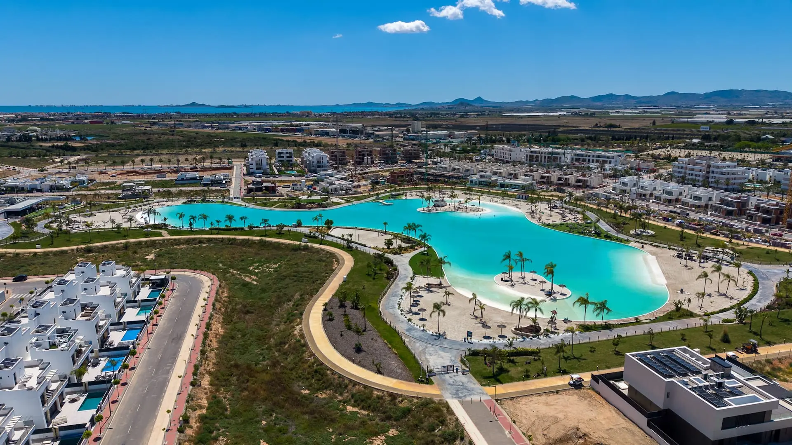
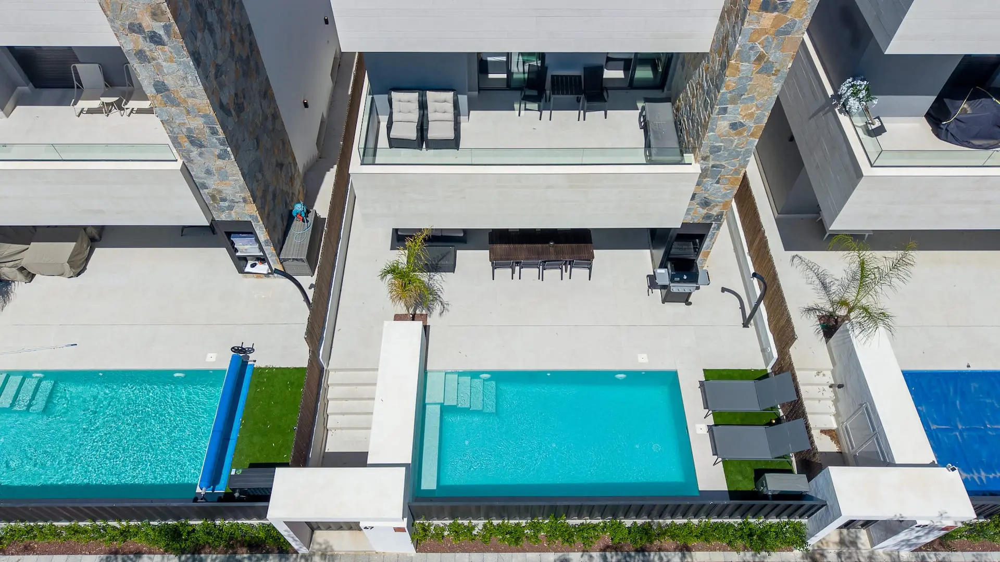

Torre-Pacheco · Región de Murcia
Santa Rosalía Lake & Life Resort
A resort built around a crystal-clear lagoon, a few minutes from the Mar Menor.
The resort
A lagoon, a beach and room to breathe

Santa Rosalía is a growing resort on the Costa Cálida, laid out around its Crystal Lagoon and landscaped green areas. It has walking and cycling paths, sports facilities, a gym and mini golf.
Villa Almendro 67 is a hundred metres from the lagoon. Wristbands for the lagoon and the resort facilities come with the villa.
The Crystal Lagoon
01 / 03
- About 16,000 m² of clear, calm water with white-sand beaches, at the centre of the resort.The Crystal Lagoon
- Walking and cycling paths run through the resort, past the sports facilities, the gym and the mini golf course. The resort is still growing, so new parts open as it is built.
 Paths, sport and mini golf
Paths, sport and mini golf - The Mar Menor is a large saltwater lagoon by the Mediterranean, with shallow, warm and calm water that suits children. Its beaches are a short drive from the resort.

A calm sea a few minutes away
Santa Rosalía and the coast
What lies around the house, from the lagoon to the Mar Menor.
Los AlcázaresPromenade and restaurantsLos Alcázares on the Mar Menor is about five minutes away by car, with its seafront promenade, beaches and restaurants.
GolfThree courses close byGolf holidays are a reason many guests come. Three courses are only minutes away.Mar Menor Golfabout 3 minLa Serena Golfabout 5 minRoda Golfabout 10 min
Getting hereTwo airportsFly to Región de Murcia International (RMU) or to Alicante (ALC). A car is the easiest way to get around. Times are approximate.Región de Murcia (RMU)about 25–30 minAlicante (ALC)about 1 hour
Location
In the heart of the Costa Cálida
Torre-Pacheco · Región de Murcia
By car, approximately
- 100m
Crystal Lagoon

5minLos Alcázares and the Mar Menor
- 3min
Mar Menor Golf
 25min
25minRegión de Murcia airport (RMU)

Stay a hundred metres from the lagoon
Villa Almendro 67 sleeps ten, with its own heated pool and rooftop.
Villa Almendro 67